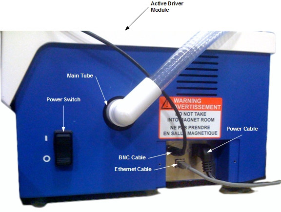
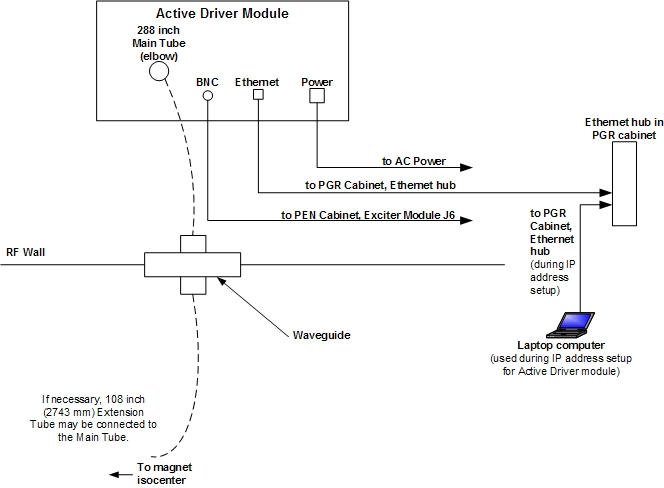
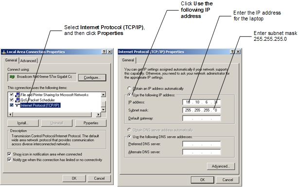
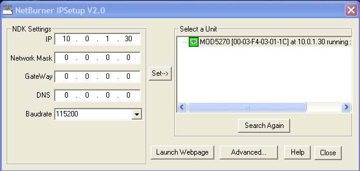
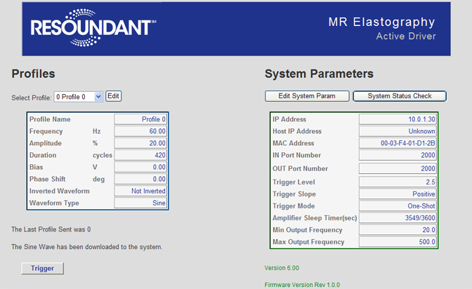

GE Exclusive Use Only
Direction 5670000, Rev# 1
Optima MR450w 1.5T Service Methods
Module Version 3.0, Version Date 2/17/10
GE Exclusive Use Only |
| Required Persons | Preliminary Reqs | Procedure | Finalization |
|---|---|---|---|
| 1 | Not Applicable | 1 hour | Not Applicable |
| Item | Qty | Effectivity | Part# | Manufacturer | |
|---|---|---|---|---|---|
| Laptop computer | 1 | - | - | - | |
| Ethernet cable | 1 | - | - | - | |
| Item | Qty | Effectivity | Part# | Manufacturer | |
|---|---|---|---|---|---|
| Active Driver Module | 1 | - | - | ||
| Passive Driver | 2 | - | - | ||
| Tubing, 288 inches (7315 mm) | 1 | - | - | ||
| Tubing, 108 inches (2743 mm) | 1 | - | - | ||
| Belt | 1 | - | - | ||
| Power Cord, US, 240 inches (6096 mm) | 1 | - | - | ||
| Power Cord, European, 300 inches (7260 mm) | 1 | - | - | ||
| BNC Cable, 600 inches (15240 mm) | 1 | - | - | ||
| Ethernet Cable, 600 inches (15240 mm) | 1 | - | - | ||
| ||||
| Ferrous Material Present! | ||||
| The Active Driver module installed in the MRE option contains ferrous material and presents a hazard if it is moved into a magnet room. | ||||
| Do not move the Active Driver module into a magnet room. |
| ||||
| Electric Shock Hazard! | ||||
| Cleaning components of the MRE option while the Active Driver MODULE is connected to electric power may result in electric shock. | ||||
| Disconnect the MRE components from electric power before attempting to clean them. Wait for all components to dry completely before reconnecting power. |
| Condition | Reference | Effectivity |
|---|---|---|
Waveguide installed to accommodate 1 inch diameter tube from the Active Driver module. | - | - |
Active driver module placed on floor in the equipment room. | - | - |
Line power outlet available for Active Driver module in the equipment room. | - | - |
Connections for the MRE option are located on the rear of the Active Driver module. See Illustration 1. Illustration 2 shows the connections between the Active Driver module and the MR scanner.
Illustration 1: MRE Connections

Illustration 2: Connections between MRE Active Driver and MR Scanner

To configure the system to communicate with the Active Driver module:
Connect the 288 inch main tube to the Active Driver module. See Illustration 1.
Connect the BNC cable to PEN cabinet, Exciter Module J6.
Connect the Ethernet Cable to the Ethernet hub in the PGR cabinet.
Connect the AC power cable to the facility-provided AC power socket.
Pull the 288 inch main tube through the facility-provided waveguide.
Turn on the Active Driver module.
On the MR Console, find the IP address for the MR system:
At the MR Console, start a c-shell window.
In the c-shell window, type the following command:
cat etc/hosts <Enter>
This displays the hosts file for the MR Console. Locate and write down the agp address shown in the hosts file (this is the IP address of the console).
The default address of the MRE Active Driver module is 10.0.1.30. The first three numbers of the address need to match the address of the MR system. If the IP address of the MR system is not of the form 10.0.1.x (where x is a number between 0 and 255), you will need to modify the IP address of the MRE Active Driver module:
Disable wireless Ethernet communication on the laptop computer.
| NOTE: | Write down the Ethernet communication settings for the laptop computer before changing them. This will make restoring the settings easier. |
Set the IP address of the laptop computer to a fixed address.
Click Start > Settings > Network Connections.
Right-click the Local Area Connection icon, and then click Properties. The system displays the Local Area Connection Properties window.
From the This connection uses the following items list, select Internet Protocol (TCP/IP), and then click [Properties]. The system displays the Internet Protocol (TCP/IP) Properties window.
Illustration 3: Laptop IP Connections Setup

Select the Use the following IP address button.
In the IP address field, type an address for the computer. Make sure the address is of the same form as the address of the MR system, but unique. For example, if the MR system has the address 10.0.6.0, set the IP address of the laptop computer to 10.0.6.31.
In the Subnet mask field, enter 255.255.255.0.
Click [OK] to close the Internet Protocol (TCP/IP) Properties window.
Click [OK] to close the Local Area Connection Properties window.
Using an Ethernet cable, connect the laptop computer to the same side of the PGR cabinet Ethernet hub where the MRE Active Driver Module is connected.
Insert the IP Setup Disc provided with the MRE Option into the laptop computer.
Run IPsetup.exe from the IP Setup Disc.
The IP Setup screen appears. The MRE Active Driver module should appear in the Select a Unit window.
Change the IP address for the Active Driver module to match the first three numbers in the IP address of the MR system. For example, if the MR system has the address 10.0.6.0, change the IP address of the Active Driver module to 10.0.6.30.
Illustration 4: MRE IP Setup

Highlight the Active Driver module, and then click [Set -- >].
Click [Launch Webpage].
A web page displays. Write down the IP address and MAC address displayed under System Parameters.
Illustration 5: Active Driver System Parameters Web Page

| ||||
| Recording the IP address of the MRE Active Driver module is critical. The address needs to be available for future servicing of the system. | ||||
Record the IP address of the MRE Active Driver module for future reference.
Close the web page and the IP Setup screen.
Reset the laptop back to its normal IP addressing, and disconnect the Ethernet cable from the laptop and the Ethernet hub in the PGR cabinet.
If you disabled wireless Ethernet communication on the laptop, re-enable it.
At the MR Console, use gedit to edit the /w/config/mre_comm.cfg file, and replace the IP address in the file with the address you set in Step 8.g.
Make sure the touch2d option key is installed on the system. If it is not, install the key using the procedures in Software Option Install with eLicense Generated Keys.
| ||||
| Electric Shock Hazard! | ||||
| Cleaning components of the MRE option while the Active Driver is connected to electric power may result in electric shock. | ||||
| Disconnect the MRE components from electric power before attempting to clean them. Wait for all components to dry completely before reconnecting power. |
| NOTE: | Do not rub decals on MRE equipment during cleaning. Over
time, the decals will rub off. Do not use solvent-based or alcohol-based cleaning solutions for cleaning the Active Driver module. |
Clean MRE components with a damp cloth moistened with a solution of bleach diluted with water or a 5% hydrogen peroxide solution. The cloth used for cleaning must not have excess fluid (no fluid may drip from the cloth).
Wipe components dry with a clean, dry cloth.
Allow all components to air dry completely before reconnecting power.
Run a goodbye scan to confirm the system is functioning normally.